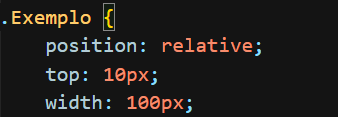
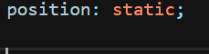
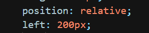
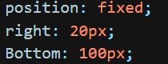

Nessa aula, iremos explorar o posicionamento dos elementos em 4 tipos: Estático, relativo, Absoluto e Fixo.
A definição do posicionamento do elemento é definido com o atributo Position, tendo os 4 valores citados anteriormente.
Estático
O estático é a definição padrão dos elementos, sendo assim, não é necessário aplicar com o position.
Relativo
o relativo é aplicado para que possa alterar a posição do elemento.
Assim que definido como relativo ou uma das duas próximas opções abaixo, é necessário aplicar o atributo de posição, que são Left top Buttom e Right.
Absoluto
O absoluto trabalha em um fluxo diferente do padrão. Isso significa que ele pode ser posicionado sem influenciar outros elementos, ficando por trás deles (Semelhante ao float).

Fixo
Deve ser utilizado para que o elemento acompanhe aa rolagem da terra, também funciona em outro fluxo.
Veja ao lado um exemplo de fixo.
